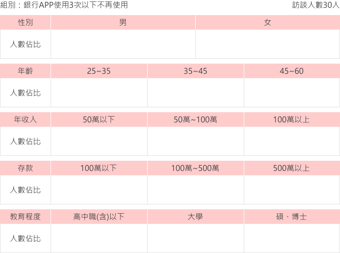
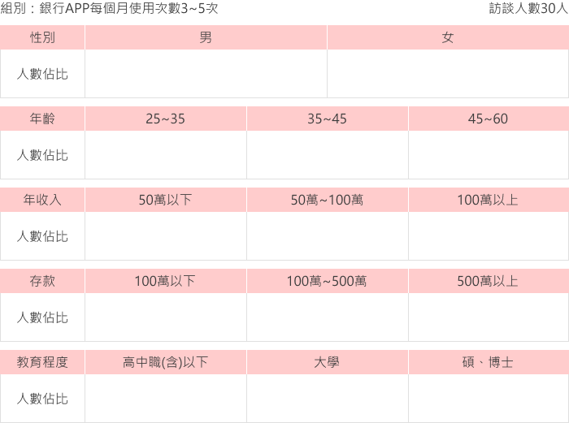
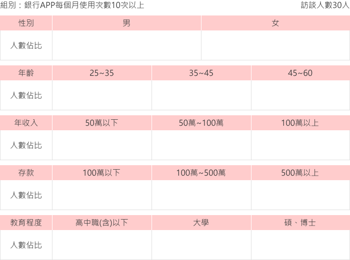
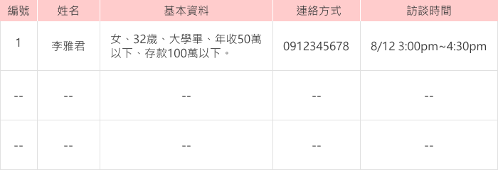
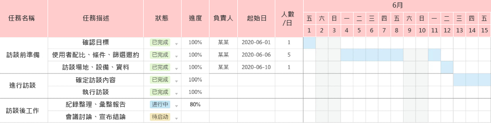
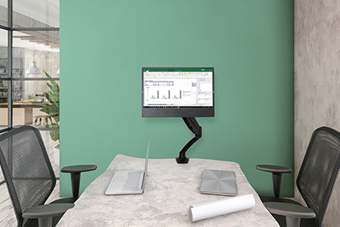
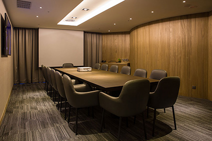

使用者訪談流程要點
目前27頁內容，建置中
滑鼠滾輪向下瀏覽
手指上滑瀏覽
0
page
USER INTERVIEW
介紹
Introduce
使用者訪談是使用者研究中常用的一種方法，是運用有目的、計劃、方法的口頭交談方式，是一種研究型的交談，是通過談話雙方的口頭交流，有意識獲得資料收集和整理。
過程中必須力求真實，不能隨便對使用者所說的話表示認同或評價，並且過程中需伴隨記錄，訪談後還要進行事後的整理和總結。
01
page
USER INTERVIEW
使用場景
Usage Scenarios
使用者訪談，通常適用於比較複雜的話題性場景中，例如：對經歷和過程仔細的研究，當下紀錄使用者的觀點以及情感等；對於複雜行為的剖析，例如：使用者是如何理解APP頁面各區塊之間的關係。
對於敏感或者私密性的話題，使用一對一的訪談法可以鼓勵被訪者願意討論；常見的定量研究，例如：問卷調查和數據分析可以獲得大量的使用者行為數據，但卻無法深入了解使用者做出行為的具體原因和場景。
我們可以通過數據分析得知操作數據，如：某個頁面的跳出率增加，卻無法
了解使用者這樣做的實際原因和場景。此時使用者訪談就可以起到一定的補充作用
。
02
page
USER INTERVIEW
使用場景重點整理
Usage Scenarios
1.深入了解使用者做出某種行為的具體原因和場景。
2.仔細研究對於操作介面完成目標的過程。
3.注意使用者在操作介面時的情緒變化。
4.分析使用者對於介面的理解。
03
page
USER INTERVIEW
訪談形式
半結構式訪談
Semi-structured Interviews
是最常運用的一種訪談形式，雖然有事先確定的目的，但是訪談中，訪談人員可以根據訪談的進展隨時的調整問題的順序，或者新增訪談的問題等，是一種相對比較靈活的訪談形式。
04
page
USER INTERVIEW
訪談方法
情景訪談法
Contextual Inquiry
由Karen Holtzblatt所開發出來的訪談法，最大的特點就是使用者把自己的體驗傳授給訪談人員。
一旦
使用者轉化成為了傳授者，那麼他就不會只講結論，而是會嘗試著說清楚前因後果
。此時訪談人員再稍加詢問細節，就很容易得知深層次的資訊。
而我們為了讓使用者能夠不知不覺地進入傳授者的角色，訪談人員必須掌握一定的技巧，這樣才能獲取有效的資訊，而此時用到三大技巧步驟就是「引入、追問到底、重覆敘述」。
05
page
USER INTERVIEW
引入
在訪談開始的時候，訪談人員可以進行暖場提問，問幾個簡單的基礎問題來幫助使用者消除緊張感。
循序漸境把話題慢慢的引入我們想要了解的主題上，進行深入探討。過程中需要明確的告訴使用者「我想知道的是什麼」，後續越來越聚焦到訪談所訂下的計畫目的。
06
page
USER INTERVIEW
追問到底
情景式訪談並
不是只聽取和記錄使用者所說的內容，只有訪談人員完全理解使用者所要表達的意思
，才能算是真正的情景式訪談。
而為了做到這一點，使用者的行為和說明出現了不能理解的內容，訪談人員必須追問到底。如果內容含糊不清，就會出現訪談人員在訪談結束後根據自己的臆測詮釋使用者行為的情況，失去訪談的正確性。
07
page
USER INTERVIEW
追問到底-情境訪談
訪談人員：您平常什麼時候會使用銀行APP？
使用者：看薪資入帳或要轉帳繳費的時候。
訪談人員：多久會使用一次？
使用者：嗯...不太常，有需要才會用到。
訪談人員：是一個月幾次還是一個禮拜幾次呢？
使用者：大概一個月4~5次吧。
訪談人員：那可以說平均一個月5次對吧？
使用者：嗯，對的。
訪談過程中，使用者常常會回答「總是」、「經常」、「偶爾」這樣的概括與抽象的名詞，這些詞語一百個人會有一百個理解。
遇到這樣的回答時，訪談人員一定要盡量使用
多追問多重複的方式，盡量數據化使用者回答
。當然，使用者不可能都向你提供準確數字的訊息。但是至少你需要了解使用者的「常常」是「一半以上」還是「接近90％」。
08
page
USER INTERVIEW
追問到底-常見錯誤
追問到底容易犯是過多的詢問使用者為什麼。頻繁的問「為什麼」，使用者容易產生厭煩心理，對訪談產生不耐煩的情緒，訪談就很難收集到真正需要的內容了。
所以可以避免的方法是，我們需要
引導使用者進行還原過程，然後了解使用者所產生的行為，在針對場景和行為去詢問使用者產生感受的原因
，針對其重點問「為什麼」。
09
page
USER INTERVIEW
重覆敘述
如果訪談人員已經
確定了解使用者的真正意思，可以把理解的內容用自己的話敘述給使用者聽，請使用者確認是否符合他的意思
。如果有理解錯誤的地方，讓使用者幫你糾正出來。
有時使用者還會根據你的敘述追加一些他當時沒有想到的關聯訊息，這樣又可以得到更多使用體驗的內容。
10
page
USER INTERVIEW
訪談獲取重點
大多數使用者在訪談中，常會提到「我用過某項功能但是覺得不太好用」等等。
使用者所提的回憶和思考後的意見，但這些無法完全保證客觀正確性，因此即使反覆分析這樣的資訊也不會有明確的結果。
而訪談中
真正要的是使用者當下操作的反應，從旁客觀紀錄未經加工的第一手訊息
，能在此基礎上進行分析，反而能發現一些甚至使用者自己都未曾發現的潛在需求。
11
page
USER INTERVIEW
訪談前期工作
Prepare
1.確立訪談目的：為了哪些問題或原因進行訪談。
2.訂立訪談規劃：訪談形式、安排成員與工作、招募使用者方法、時程排定。
3.編寫訪談內容：羅列問題點，預想可能情況安排備用計畫。
4.招募使用者：發布訊息、篩選條件、進行聯絡。
5.訪談前確認：設備清單、呈現資料、預定場地、相關人員和訪談內容熟悉。
12
page
USER INTERVIEW
招募使用者
是訪談計畫中能否有效達成目標的重點之一，有4項要點，
招募途徑、篩選方式、整理分類、訪談時程
13
page
USER INTERVIEW
使用者招募途徑
依照訪談計畫的需求，可從 1.自家產品後台資料。 2.發布活動問卷。 3.委外人力市調公司。
14
page
USER INTERVIEW
使用者篩選
首先根據產品屬性確立目標客群條件，如：性別、年齡、婚姻狀況、職業、居住條件...等，然後從有意願參與的使用者中選出符合條件的人。
範例
  
15
page
USER INTERVIEW
問卷篩選-定義條件
1.基本資料：年齡、性別、職業、居住地區...等。
2.進階資料：教育程度、資產、年收入、存款...等。
3.產品使用：使用時間、使用頻率、單次使用時長...等。
4.使用目標：使用原因、常用功能、產品優點、產品可改善或期望...等。
5.其他資訊：從哪裡得知我們的產品、覺得哪個同類產品更好...等。
16
page
USER INTERVIEW
使用者資料整理
範例

17
page
USER INTERVIEW
訪談時程表
範例

18
page
USER INTERVIEW

場地選擇
場所的選擇也會對訪談有些影響，如圖：應該盡量塑造溫馨舒適的氛圍以消除用戶的緊張感。

19
page
USER INTERVIEW
訪談工具清單
List of Items
測試：產品裝置。
紀錄：電腦、紙筆、錄音設備。
訪談：計畫大綱、提問列表。
合約：相關協議書(如：使用授權、錄音許可、個資使用...等)。
20
page
USER INTERVIEW
進行訪談
Interview
開場白建立信賴關係
如果和使用者見面就上單刀直入切入正題開始進行訪談，那麼訪談可能無法順利進行。因為使用者還處於陌生緊張狀態，訪談人員和使用者之間還沒有建立起基本關係。
首先可以進行簡單的寒暄和自我介紹。通過輕鬆的溝通先活躍氣氛讓使用放鬆，接著就可以向使用者說明訪談目和內容，因訪談非一般談話聊天，如果不事先說明，訪談過程中就可能會受阻。
舉個例子：
您好，我是某某公司的訪談人員，我是XXX，這是我的同事XXX，謝謝您這次願意前來。這次我們希望了解(訪談目標)，所以想請您聊聊您使用產品的情況。 我們有準備一些簡單的問題主要是包括情況(訪談內容)，希望能夠通過聊天的形式向您了解，大概需要1小時左右時間。
過程中所有聊到的問題沒有對錯之分，您只需要分享真實的想法和經歷就可以了。如果對任何問題有疑問或是不知道直接說，不需要有任何的顧慮。 您提供的訊息能幫助我們更好了解使用者，改進我們的服務與產品。我們會對整個談話進行記錄，因為訊息量可能很大，我們希望能夠錄音。錄音內容只用於分析，不會公開，不知道您是否介意？ 如果介意的話，也可以不錄音。在聊天的過程中，我們可能會就一些細節內容提出問題。可能會常常追問，請您不要介意。
21
page
USER INTERVIEW
正式訪談
和使用者建立起基本關係後，接著把話題引入到產品的使用。通過訪談，逐漸明確詢問使用者是如何使用產品。
一般有五個部分的問題構成，分別是基本訊息、過往經歷、產品感受、體驗流程、競品體驗、最後根據訪談內容再深究細節。
22
page
USER INTERVIEW
正式訪談-基本訊息
方便我們了解使用者。從基本訊息的詢問開始就需要考慮後續的對話應該如何展開。
前面講到的「情景訪談法」就是在請教的名義下，讓使用者談論自己的使用體驗。會從職業、興趣...等開始切入。一方面能夠幫訪談人員建立起用戶形象，另一方面也能讓使用者進入情景式訪談的傳授者角色中來。
23
page
USER INTERVIEW
正式訪談-過往經歷
當使用者的話題逐漸被打開進入角色後。我們可以從日常的使用內容聊起了解具體的行為、操作或者場景。
然後逐漸進入整體，例如因為什麼開始使用銀行APP的，再按照日常的使用經驗、操作無法達成目標或是操作不順利的經歷和情況、其他同類產品的使用情況，這個基礎順序展開話題，逐層推進。
24
page
USER INTERVIEW
正式訪談-產品感受
在對使用者形象以及過往使用產品的經歷有了解後，需要我們準備好安裝最新版本產品的測試機供使用者使用，我們就可以對實際使用產品時的體驗進行詢問了。
25
page
USER INTERVIEW
正式訪談-體驗流程
我們通常需要先給使用者一個操作任務並營造一個場景。
例如：您到一個商家進行購買時發現忘記帶錢包，而商家提供電子轉帳付款的服務。請您打開銀行APP進行電子轉帳的操作。
訪談人員需要觀察當下使用者完成任務的過程，後續進行相關的產品提問。體驗完成後以評分方式邀請用戶對於使用體驗進行評分和描述給分原因。
另外設計風格問題則是側重產品互動體驗以及視覺感受。
例如：對於現有的頁面結構和排版覺得是否喜歡、瀏覽頁面是否符合閱讀順序、轉跳頁面的互動形式看法等等，同樣可以邀請使用者進行打分。
26
page
USER INTERVIEW
正式訪談-競品體驗
同樣需要準備好裝有競品最新版本產品的測試機，供使用者進行體驗。
可以選2~3個左右競品，
從操作流程以及設計風格方面分別對使用進行提問並進行打分，後續可以與本公司產品的評分進行交叉比對。
27
page
USER INTERVIEW
01.介紹
10.費茲定律
17.十大可用原則
19.狀態可見原則
22.環境貼切原則
24.使用者可控原則
26.一致性原則
28.防錯原則
32.易取原則
35.靈活高效原則
37.優美簡約原則
39.容錯原則
42.人性化幫助
44.奧卡姆剃刀法則
45.時間相對論